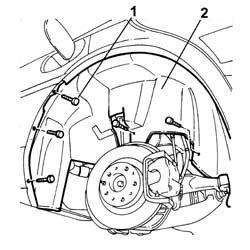

7055B45 Right rear wheel arch liner - R.R.
- Path
- Procedures > 70 FITTINGS > 7055 MOULDINGS ON PROTECTIONS > 7055B EXTERIOR PROTECTION > 7055B45 Right rear wheel arch liner - R.R.
- Kind
- repair procedure (removal / refitting; the operation number is the code)
- Applies to
- all engines; all production periods
- Interactive page
- https://sloeber94.github.io/elrnDB-lThss/en/#/115628
Applies to: all engines; all production periods
 Removing
Removing
 Refitting
Refitting- Position the vehicle on a lift.
See in Op. 4450B08 Right REAR WHEEL (one) - R.R.
-
1. Undo the fixing bolts.
2. Remove the rear wheel arch guard.

Applies to: all engines; all production periods
Refitting
Removing- Fit the wheel arch in place and secure it using the bolts.
See in Op. 4450B08 Right REAR WHEEL (one) - R.R.
-
- Remove the vehicle from the lift.
Topics linked from this page (1)
Topics that link to this page (14)
- 1040A10 FUEL TANK - R.R. and decant fuel
- 1040A14 FUEL TANK - R.R. for REPLACEMENT
- 1040A10 FUEL TANK - R.R. and decant fuel
- 1040A14 FUEL TANK - R.R. for REPLACEMENT
- 1040A30 FUEL FILLER PIPE ASSEMBLY - R&R
- 1080E20 active charcoal filter for fuel vapours - r + r
- 3310B36 REAR BRAKE CALIPER (one), left or right - R.R.
- 3330E30 FLEXIBLE PIPE TO rear BRAKE CALIPERS
- 3340A34 rpm sensor (one) for one l/h or r/h rear wheel - r+r
- 4420C10 Rear suspension ANTI-ROLL BAR - R.R.
- 4420C12 Rear suspension ANTI-ROLL BAR JOINT (one), left or right - R.R. on vehicle
- 4420C80 Rear suspension CAMBER ROD - R.R.
- 7055B43 REAR WHEEL ARCH LINER (one), left or right - R.R.
- 7055B44 Left rear wheel arch liner - R.R.